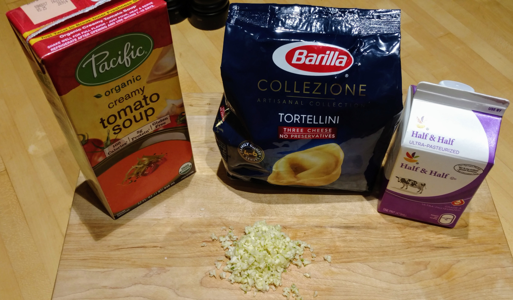
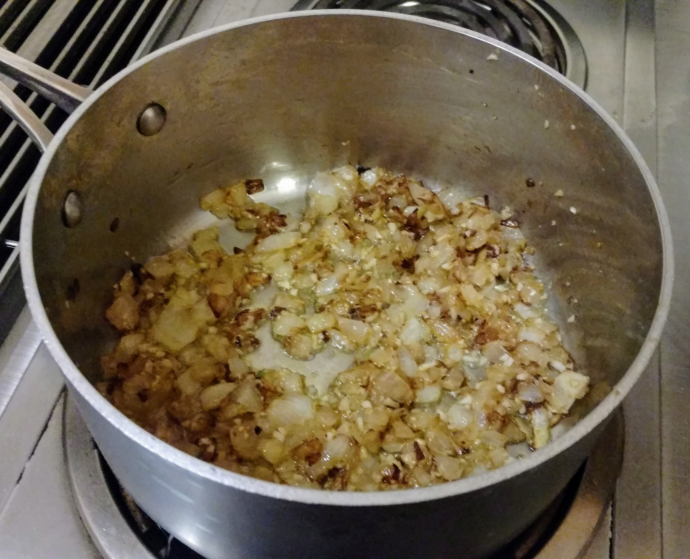
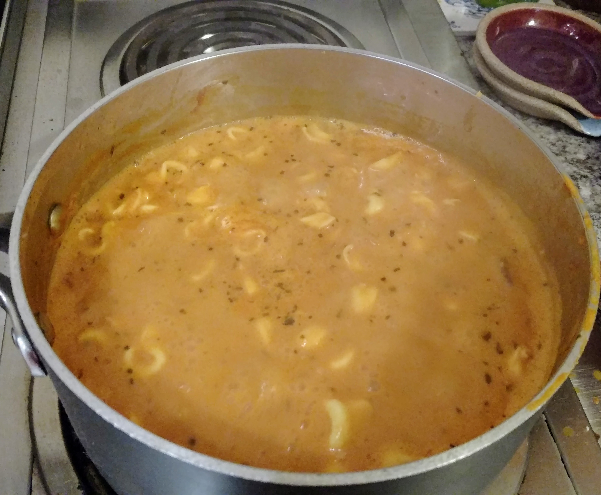

Just because a dish is vegetarian doesn’t mean it isn’t filling! This simple soup makes a fantastic weeknight dinner. Honestly, this soup was done even faster than I thought it would be. AND the leftovers lasted me for 5 meals! This recipe was just full of surprises.
This picture is proof of how simple this recipe really is. I forgot to put the onion in with the photo, but honestly if you wanted this meal faster, you could even leave it out and use onion powder instead
I cooked these up real quick over medium-high heat. The most inportant thing is that the garlic gets toasted and onions soften
I used half-and-half in this recipe because I had it leftover from making some spagetti carbonara. Normally I would use skim milk, but honestly I was so glad I used the half-and-half. It made the soup so extraordinarily creamy and super fillng. If it's getting thicker than you'd like as the tortellini are cooking, feel free to add some warm chicken broth or water.